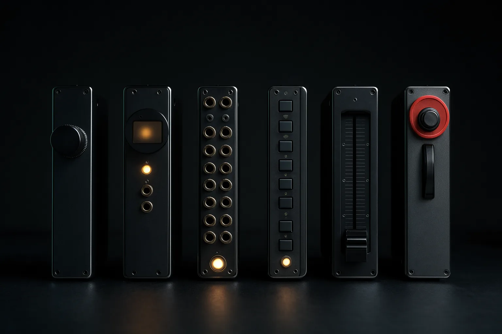
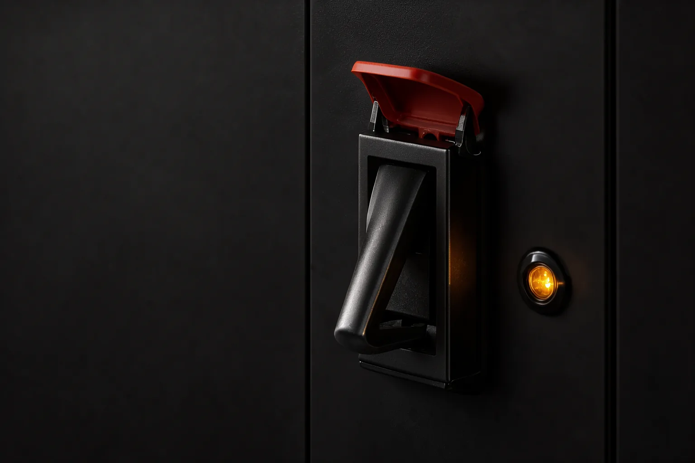
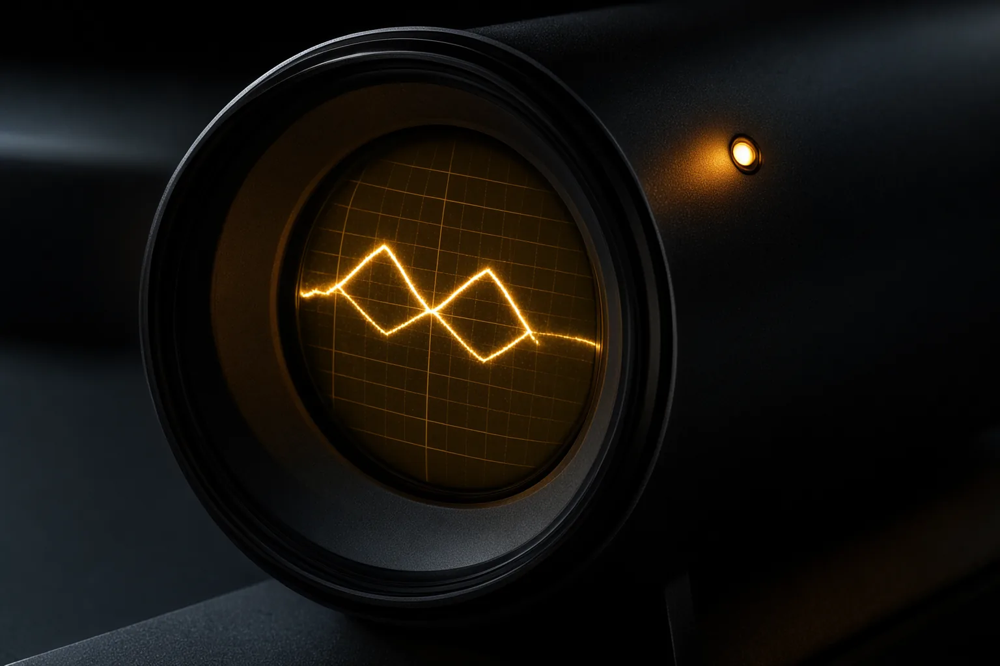

Building
Team
style tile, not a layout
Input: one sentence. Output: this website. Follow the signal.
That thread becomes your project manager, sets up the tools and five agent threads, and asks for your first website idea.

Colour
Black panel, silkscreen white, one signal colour. Green and red only ever appear beside a word that says what they mean.
silk on it 15.80
silk 14.30 · label 6.30
text
on panel 6.96
on panel 10.73
on panel 10.42
on panel 6.27
hairlines only
Type
Archivo at full width for faceplate headings, normal width for reading. Martian Mono labels the parts.
Controls
The rack
Each agent is a module: a faceplate, a small screen for its real artefact, and jacks for briefs in and reports out.
Sequencer
PM · sends briefs on the beatAnalyser
Research · listens firstOscillator
Concept · makes three wavesFilter
Front-end · shapes and cutsPatch bay
Backend · routes and connectsLimiter
Review · nothing passes above the lineA gate
Gate 2: creative direction
The signal stops here until a person decides. Lift the cover, throw the switch.
Decision (tile placeholder): direction B. On the site this is set from DECISIONS.md.
What the human saw
Three directions side by side: key art, a style frame, palette, type and the set piece in two sentences.
The set piece, sketched
The oscilloscope draws the double diamond as the signal's envelope: one line widens into many ideas and narrows to one decision, twice. Four gate marks; dashed red loops for “revise”.
Pull a cable
The explaining device: unplug Review and see what would have shipped.
· body text at 3.9:1 contrast on one card
· hero image without alt text
· a broken link in the footer
Plates


